Introduction
The Toolbox is a stand-alone application that acts as the central hub of Torque 3D game development. Key features of this program include:
- Project Management - Create blank projects, generate new projects based on templates and genre kits, and modify an existing game.
- Editor Shortcuts - Buttons that will launch your selected project in the World Editor, GUI Editor, C++ compiler, Torsion, or basic play mode.
- Project Deployment - Package your game in zip format, generate an installer, or deploy to a web browser.
- External Tool Links - Create shortcuts to 3rd party programs that are useful for development, such as Photoshop, Maya,
3DS Max, ShowTool, and more.
Layout
The main interface for the Toolbox application supplies you with a quick-and-easy environment where you can access the key components of your game. The Toolbox window contains two tabs: Projects and Documentation. The Projects tab provides organization and management of your projects. Documentation contains links to the documentation included with the engine. The remainder of this document will focus on the Projects tab.
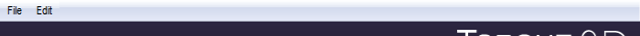ToolBox File Menu. Use this to access the tool options and settings (not related to the game project.).', WIDTH, 450)" onmouseout="UnTip()"/>
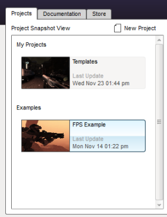Projects Tab. Contains a list of examples and user created projects. Clicking on an entry will populate the Project Information section with new details.
Documentation Tab. The documentation tab provides links to the offline documentation and quick documentation links.', WIDTH, 450)" onmouseout="UnTip()"/>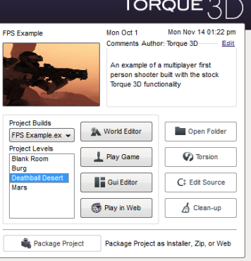Project Information. This section contains details about your project, such as date of last modification, number of working levels and their names, and working binaries (debug and release executables).
Project Properties. This section contains the main editor shortcut buttons for editing your project, including opening the World and GUI editors, source code, Torsion project, and packagaing your game for deployment.
Package Project. The Package Project button will package your project for the end user. Once you have finished developing your game, this will process it and package it as an installer, zip, or web plugin.', WIDTH, 450)" onmouseout="UnTip()"/>
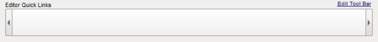Quick Links Bar. The Quick Link bar can be customized to your liking to include shortcuts to 3rd party applications and utilities you will use throughout development. Examples include Photoshop, Maya, Notepad, and so on.', WIDTH, 450)" onmouseout="UnTip()"/>
The Project Snapshot View on the left is a list of all your projects. On the right is an area that provides more information on the currently selected project. Within this area, you can access that various editors, important functionality such as project cleanup, or testing your game with the Play Game button.
Along the bottom of the window is the Editor Quick Links bar for storing short cuts to commonly used applications (for example: Photoshop or 3DS Max).
Project Snapshot View
The Project Snapshot View contains a list of all your projects, as well those that ship with Torque 3D. To begin work on a project you must select it from this list first.
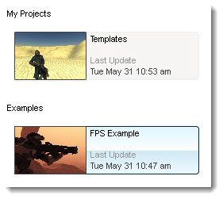
Projects are divided into three categories:
- My Projects - Projects that you create are listed here. "My Projects" will not appear until you've created your first project, described in detail below.
- Demos – Reserved for stand-alone Torque 3D applications that show off certain aspects of the engine. Demos are not intended to be used as a starting point for a game.
- Examples - Game packages that contain a wealth of assets and
code that you can use as a starting point for your game.
TIP: The Project Snapshot list is populated by any projects the Toolbox finds on disk inside the folders named "My Projects", "Demos," or "Examples" in your Torque 3D directory (by default these folders are located in C:\Torque\Torque 3D Pro 1.1\). You can manually add or remove projects by moving them in or out of these folders.
Creating a New Project
Creating a new project is a simple process. To get started, click the New Project button located above the Project List.
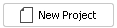
After clicking the button, a dialog will pop up over the main Toolbox window. The project name you choose is important. The Toolbox will use this name in the Project Snapshot list to change several script variables that customize your game window title bar, server name, and so forth. It will be also be used to name the directory containing your game.
(click to enlarge)
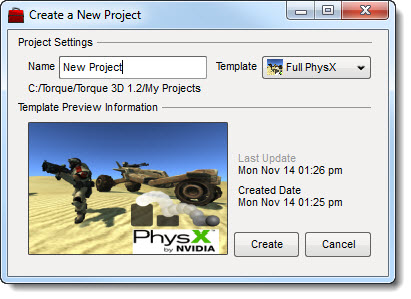
The Template drop-down menu will allow you to pick an
existing project type to generate your game on top of. Stock Torque 3D
ships with Full and Empty templates. The Empty template is a completely
bare-bones project with no starting assets or game scripts. The Full
template contains at least one of nearly every asset type and script
example.
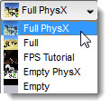
Go ahead and name your project "Tutorials" and select the Full template. Since a large portion of tutorials and guides found in the rest of this documentation require existing assets (the technical term for models, artwork, and other items used within games), it is best to use this template to save time and allow you to focus on learning the engine. We will learn about generating and importing assets later.
(click to enlarge)
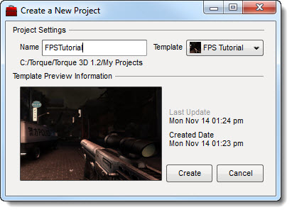
When you are ready, click the Create button at the bottom
of the window. A new dialog will appear displaying the project creation
progress. This process includes copying template files, formatting
scripts and assets, and generating project information.
(click to enlarge)
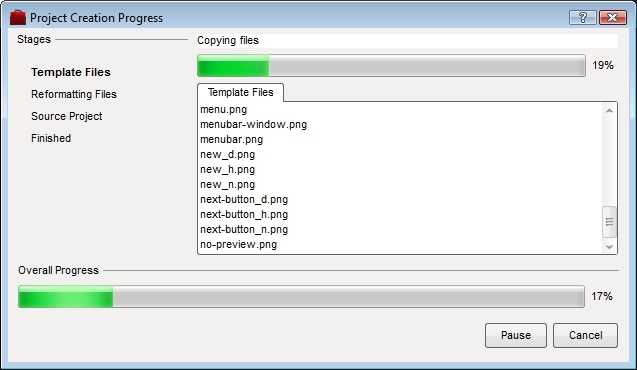
When the process is finished you will be provided the projects location on disk.
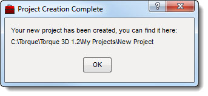
In addition, the Project Snapshot list will automatically update to include a new section called "My Projects" and your Tutorials project will be added. Any future projects you create will be added here as well.
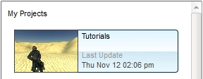
Project Information
When you select a project from the Project Snapshot list, the right side of the Toolbox will dynamically update to display information specific that project. Most of your interaction with the Toolbox will be in this area. If you select the "Tutorials" project you just created, you should see something similar to this image:
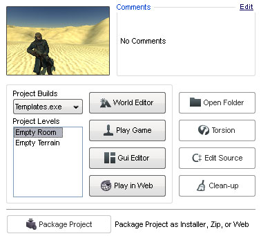
Preview Image
The thumbnail preview image can be set to whatever you like by replacing "thumb.png" in your game root directory (see 'Open Folder below for help navigating quickly to your games root directory). This is not a requirement, but it can help you visually organize your projects in the Toolbox.
Comments
To the right of the preview image is a Comments field. The text in this box is read from a text file in your project directory, which is populated by a call into Subversion source control ("SVN"). If your project is not under SVN source control, the Comments section will default to "No Comments" but the Last Update time will still be accurate. Proper configuration of SVN is beyond the scope of this document.
Project Builds
Before editing or running your game, you can choose how the project should execute. Just below the preview image is a drop-down box called Project Builds.
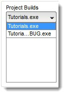
By default, there will be just one option in this list (in our example "Tutorials.exe"). Programmers, who have used an IDE (Integrated Development Environment) like Visual Studio to compile debug and release versions of their game, will see those listed here as well. The executable selected in this list will be used to run the game when that action is invoked from either the Toolbox or from within the World Editor.
Project Levels
The Project Levels list contains all the level files found in your
game\levels directory, which in our example would be: ..\My Projects\Tutorials\game\levels\*.mis (Tip: although we refer to "levels" in this document, the ".mis" extension stands for "mission" - this extension has been retained in Torque 3D to ease the transition for users of our legacy engine products).
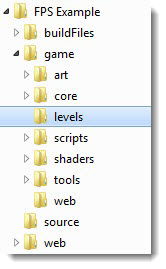
The level you select here will be loaded or played when you launch the World Editor.
World Editor
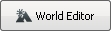
To modify your game levels, click on the World Editor button. After you click the button, a dialog will acknowledge your choice, letting you know that the Toolbox is about to be minimized and that your project is launching.
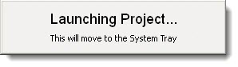
After your project launches, the World Editor will immediately run and load the level you selected in the Project Levels list above. See the World Editor documentation for more information.
(click to enlarge)
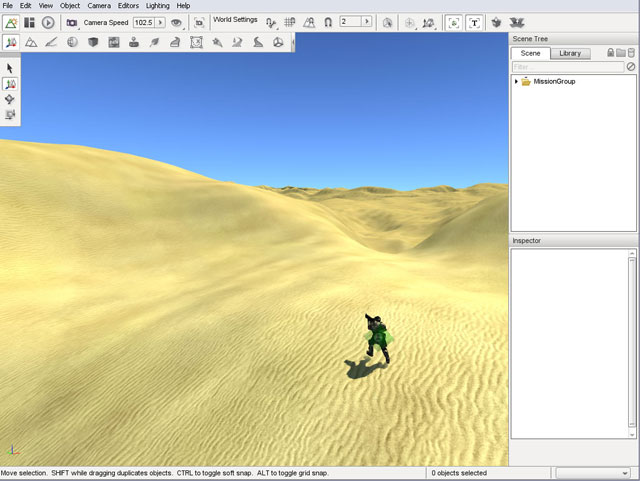
GUI Editor
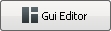
Pressing the GUI Editor button will load the GUI Editor and present the GUI Selector dialog.
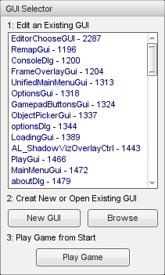
From here you can:
- Select which GUI to work on, either from the list or by browsing your game folders;
- Create a new GUI; or
- Play your game to load the level selected in Toolbox.
Selecting a GUI from the list will immediately open it in the GUI Editor as shown below. See the GUI Editor documentation for more information.
(click to enlarge)
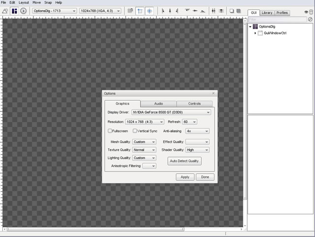
Open Folder
The Open Folder button opens up the root directory of your game project for browsing and exploring. It performs no other actions; it is a simple way to navigate to the main game folder for the currently selected project.
(click to enlarge)
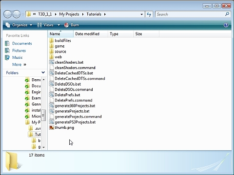
Edit Source
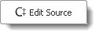
For developers who want to edit the engines source code, the Edit Source button provides a shortcut to launch Visual Studio (for Windows) or Xcode (for Mac). It is recommended that you follow the Programmer section of the Setup – Overview instructions before using the Edit Source button.
When you click Edit Source, the Toolbox will begin to prepare the developer environment for the currently selected project. This process should not be interrupted.
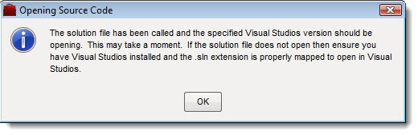
On Windows, after the initial load the Toolbox will prompt you to choose a Visual Studio version. Supported compilers from this window are Visual Studio 2005 or 2008. Both the Express and Full versions of those tools are supported. For Mac OS X, the only supported compiler is Xcode 3. This article only covers development under Visual Studio.
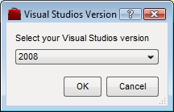
After the development environment has been prepared by the Toolbox, your C++ solution will be loaded.
(click to enlarge)
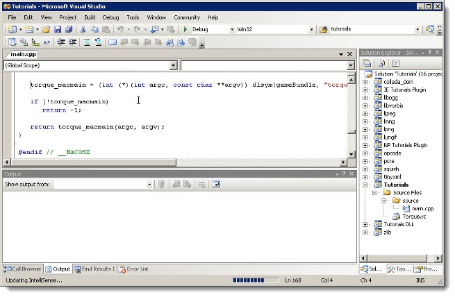
Play Game

Clicking the Play Game button will run your game binary (executable) as if you were the end user playing the game. Your game will go through the full entry point, unlike the World Editor.
(click to enlarge)
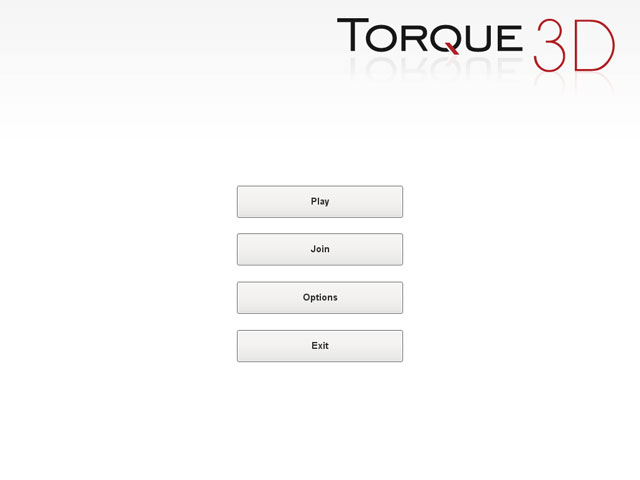
When you exit the game, the Toolbox will still be running with your project selected.
Play In Web
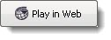
Play in Web is similar to the Play Game button. Clicking Play in Web will launch your project inside a web browser. NOTE: You may need to compile the web plug-in for your project before this option becomes available.
(click to enlarge)
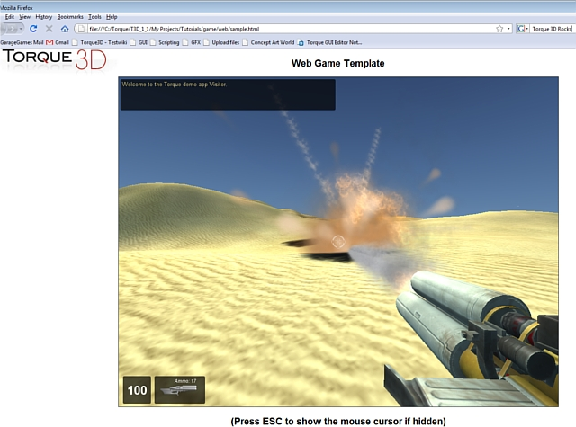
When you exit your game by closing the browser, the Toolbox will still be running with your project selected.
Torsion
This button is only applicable if you are on Windows and have Torsion installed - sold separately. Although TorqueScript files can be edited with any text editor, Torsion is a very useful utility provided by Sickhead Games for editing and debugging TorqueScript. Clicking this button will open your Torsion project. After you click the button, the Toolbox will inform you that it has started the launch process and proceed without further interaction.
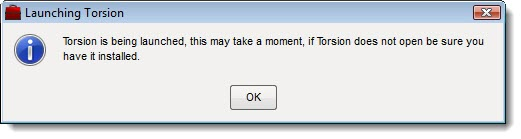
After Toolbox is finished, Torsion will automatically run and load your game project.
(click to enlarge)
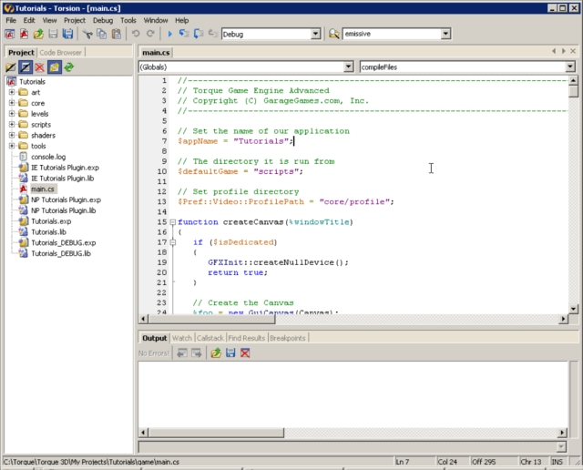
When you exit Torsion, the Toolbox will still be running with your project selected.
Cleanup
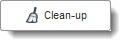
WARNING: DO NOT click this button until you understand what it does!
The Cleanup action will clean and recreate your C++ projects. This is only needed if you are working with the source code of the engine. If you have made any modifications to the project structure, they will be lost! This includes adding or deleting files, filters, groups, and compiler settings. Once you click the button, the process will begin and should not be interrupted.
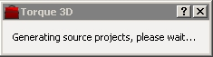
Once the cleanup is complete, you will be notified by a pop-up box. Your projects should have been restored to its default state.
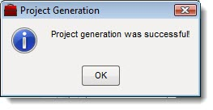
Adding Quick Links
At some point during development, you will need to use tools and programs not provided by Torque 3D to create content for your games (for example 3D modeling software). As the name "Quick Links" implies, the Toolbox allows you to add shortcuts to your favorite tools for quick access. Quick Link shortcuts can be made to any application.
There are no default Quick Links in the Toolbox:
(click to enlarge)
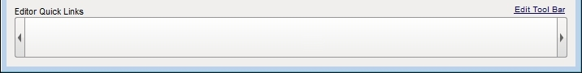
To add a quick link, click the "Edit Tool Bar" text on the right side of the bar. This will open the Tool Bar Editor, which will contain a list of any quick links you have already created. From here, you can Add, Edit, or Remove any of these links.
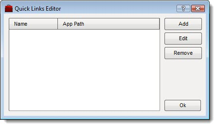
Clicking the Add button will open a new dialog that will allow you to add a quick link.
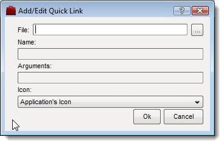
You can manually type the complete path and filename of the program you want to add, or click the browse button (the box with the three dots) to find the location of your application by browsing your hard disk. In this example, we have browsed to the binary for GIMP (an image editing application).
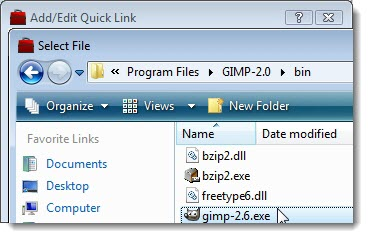
After clicking OK, the fields for the quick link will automatically be filled in for you. You can change the name of your quick link by editing the Name field, add execution arguments (usually not required), or use the Icon drop down to change the visual appearance of your quick link.
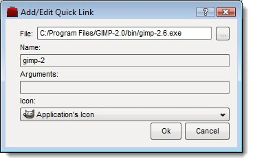
When you click OK, the application you've chosen will now appear in your Quick Links list.
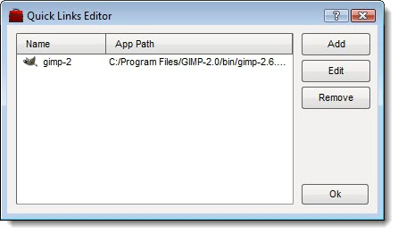
From here you can add, edit, or remove additional links, or simply close the Quick Links Editor by clicking Ok. Your Quick Links bar will now contain shortcuts to the applications you have chosen.
(click to enlarge)

TIP: If you are not using Torsion (discussed above), you may want to create a Quick Link to a text editor like NotePad++ (Windows) or TextWrangler (Mac) for editing TorqueScript files.
Package Project
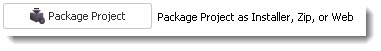
When you are ready to distribute your final game or a demo, you can make use of the Toolbox Package Project feature. In previous Torque engines, it was up to you to come up with a method of deployment/packaging. This meant manually compiling your project, zipping your files, and acquiring a 3rd party utility to create an installer.
With Torque 3D and Toolbox, we have provided an automated process that can be kicked off with a few simple button clicks. When you click on the Package Project button, a new dialog will appear.
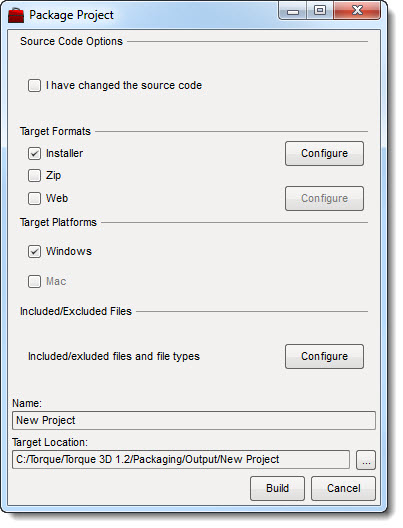
Source Code Options
Checking the box here will cause Toolbox to recompile your project. If you are not using an IDE like Visual Studio to edit source code, there is no reason to check this box. Note: Changes made to TorqueScript using Torsion (or any plain text editor) do not constitute changes to source code.
Target Formats
Choose the package type you would like to create by clicking on the check boxes.
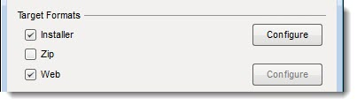
- Installer will create an automated installation utility.
- Zip will compress your game files into a single .zip file.
- Web will recompile the web plug-in and clean your game files for easy upload. Note that if you check this box, an additional "Destination URL" field will appear, as shown above. This allows you to specify the directory the plug-in is installed from on your website.
Target Platforms
Choose your current platform that you are packaging on to create the correct package for that platform.
Included/Excluded Files
You can configure which file types will be packaged with your game. Commonly excluded files are Photoshop and 3DS Max files, Torsion projects, script files (if you are only distributing DSOs), etc. This is explained in greater detail under Configuration Options below.
Name
The final name of your game, which is used as a label for the various packages.
Target Location
The folder of the final, packaged product you will distribute.
Configuration Options
In the main Package Project dialog there are a number of buttons labeled Configure. Each one will launch the same advanced settings dialog, but a different active tab will be auto-selected depending on which Configure button was clicked. Each of these tabs are discussed in more detail below.
Installer Tab
The Installer tab is used to customize details associated with generating an Installer package.
(click to enlarge)
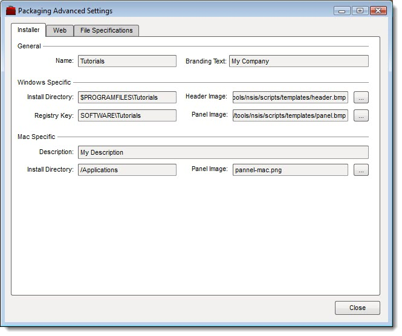
- Name - The final name of your game, which will be used as a label inside the installer for titles and instructions to end users.
- Branding Text - The name of your team or company, also used inside the installer for descriptions.
- Windows and Mac Platform Specific Settings - Each OS handles installed products differently. In this section, you can determine the default location to install the game, how the OS manages the software internally (such as the registry key label used for Windows), and the installer appearance. The Header and Panel images can be customized to use artwork specific to your game.
Web Tab
The Web Settings tab contains advanced options for this packaging method.
(click to enlarge)
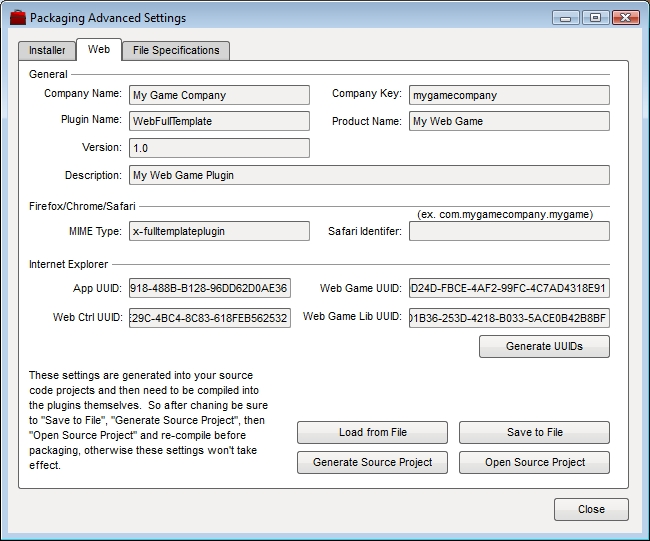
General - The settings here are fairly self-descriptive. Each field is required, but can be customized based on your game.
Browser Support Settings - Like operating systems, web browsers are varied and tend to use their own custom processes for extensions and plug-ins. Firefox, Chrome, and Safari use similar plug-in schemes. However, Internet Explorer requires several unique IDs for certification. Clicking the Generate UUIDs button will cause the Toolbox to regenerate a guaranteed unique set of keys.
For detailed information on the entire process, read the web publishing tutorial.
File Specifications Tab
The File Specifications tab is used to configure which files will be included or excluded in all generated packages (Installer, Zip, and Web).
(click to enlarge)
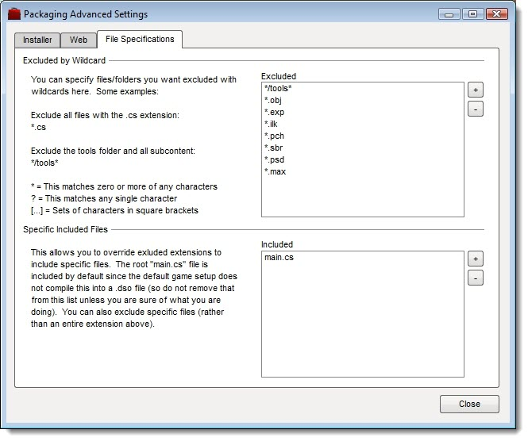
You should only deploy the bare minimum of files required to run your game, such as binary art, scripts, and game ready art assets. You can specify wild card extensions to exclude/include all files of a certain type. Additionally, you can specify entire folders to exclude.
For example, you may have saved a Photoshop file used to make a texture in your projects root directory. While this is convenient during development, when it is time to deploy your game you only need the final .jpg, .png or .dds that was generated from that Photoshop file. The same goes for 3D model source files created in Blender or Max, as well as Torsion project files, and so on. Another example of a file type you should exclude are thumbnails (.db) automatically generated by Windows. The size of your final game package will be considerably smaller if you exclude these files.
Security is a consideration too. You should exclude the tools folder, which is typically used only for development and could be used to exploit your game and its content if you distribute it. Furthermore, to prevent sophisticated users from cheating, you may want to generate DSOs from your TorqueScript files. Creating DSOs is beyond the scope of this document, but if you do so, you will want to exclude all but a few of your script files (.cs).
Building the Packages
Once you have completed configuring your desired options and have returned to the Package Project dialog you can start the process by clicking the Build button. A new dialog tracking the packaging process will appear.
(click to enlarge)

The first process will start by building your project and copying the final result to your staging directory. After the staging is finished and all of your game files are ready to be deployed, the package creation process will begin. The first packaging routine will compress your game to a zip file if you had that check box enabled. After this, the Installer will be generated to include your game, OS settings, and custom artwork.
Once the packaging process has completed, you will be notified by a new pop-up dialog.
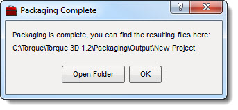
This dialog gives you the option to jump straight to the folder containing your final product by pressing the Open Folder button. The files found here can be distributed to your end users however you see fit.
Conclusion
The Torque 3D Toolbox is a powerful utility designed to provide you with an all-in-one solution for managing and editing your project. This article was written to give you an in-depth walkthrough of its capabilities and how to leverage the tools it contains.
Take some time to experiment with the Toolbox by clicking buttons, creating projects, and deploying packages. Make sure you have the Tutorials project readily available, as the rest of the documentation will be use it as an example in other guides. With a new project created, you are now ready to begin learning and using the Torque 3D World Editor.
|
{kind=link}
{kind=link}
{kind=link}
{kind=link}
{kind=link}
{kind=link}
{kind=link}
{kind=link}
{kind=link}
{kind=link}
{kind=link}
{kind=link}
{kind=link}
{kind=link}